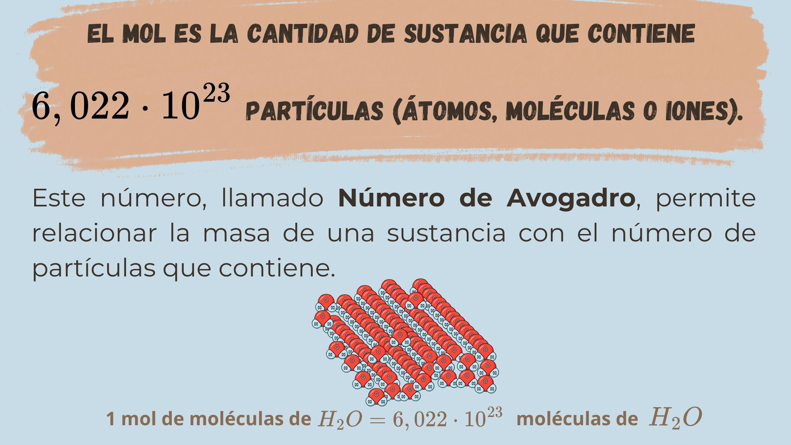

SA3. El Queso y la Ciencia: ¿Cómo la química mejora lo que comemos?
El Mol: La "unidad de sustancia" de la química
Actividad 20: Rellenar huecos
Completa la frase con el número correcto.
Obra publicada con Licencia Creative Commons Reconocimiento Compartir igual 4.0